TRICEPS WORKOUT EXERCISES
Triceps Anatomy
The triceps may not have the same cultural cache as their cousins on the other side of the humerus, but in the strength world, they're just as important—if not more so! Whether you're a bodybuilder or just someone looking to get stronger in your presses, it's worth your time to add some size to the back of your arms.
You can put together a hundred different triceps routines by fine-tuning variables like exercise choice and order, rep ranges, intensity, volume, and rest periods. But rather than making you sit down to try and figure all of that out, I've done the work for you here with six straightforward and effective triceps workouts.
Each is a bit different from the others based on your training experience and goals. Each one includes movements from the large family of triceps exercises—close-grip bench presses and dips, skullcrushers, press-downs, overhead extensions, and kick-backs—that focus on one or more of the three heads (lateral, long, and medial). Of course, you can't isolate a particular head, but you can shift the focus to some degree with changes in hand and body position.
Pick a routine you like, try it for 4-8 weeks, then go back to your regular workout or try another from the list. Put it wherever it makes the most sense in your split, and let me know how it worked out in the comments!
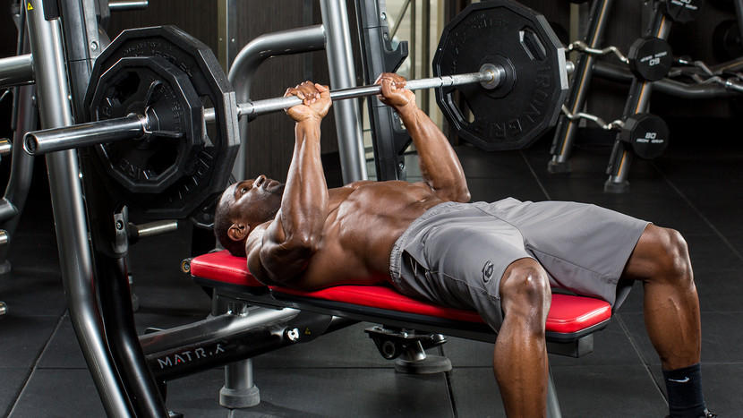
Tips
- Warm-up sets aren't included; do as many as you need, but never take warm-ups to muscle failure.
- Choose a weight that allows you to reach muscle failure by the target rep listed.
- Go heavy on your first working set (first two sets of the first two exercises), and lighten the weight for slightly higher reps on successive sets.
- If you have a spotter, do a few forced reps on your heaviest sets, which are your first two sets. If you don't have a partner, train as close to muscle failure as possible, and perform a dropset on your last set of each exercise.
- Close-Grip Barbell Bench Press
- Lie back on a flat bench. Using a close grip (around shoulder width), lift the bar from the rack and hold it straight over you with your arms locked. This will be your starting position.
- As you breathe in, come down slowly until you feel the bar on your middle chest. Tip: Make sure that - as opposed to a regular bench press - you keep the elbows close to the torso at all times in order to maximize triceps involvement.
- After a second pause, bring the bar back to the starting position as you breathe out and push the bar using your triceps muscles. Lock your arms in the contracted position, hold for a second and then start coming down slowly again. Tip: It should take at least twice as long to go down than to come up.
- Repeat the movement for the prescribed amount of repetitions.
- When you are done, place the bar back in the rack.
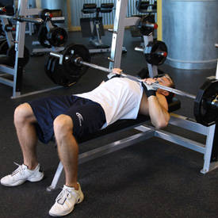
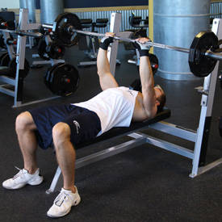
Caution:
If you are new at this exercise, it is advised that you use a spotter. If no spotter is available, then be conservative with the amount of weight used. Also, beware of letting the bar drift too far forward. You want the bar to fall on your middle chest and nowhere else.
Variation:
This exercise can also be performed with an e-z bar using the inner handle as well as dumbbells, in which case the palms of the hands will be facing each other.
- Dip Machine
- Sit securely in a dip machine, select the weight and firmly grasp the handles.
- Now keep your elbows in at your sides in order to place emphasis on the triceps. The elbows should be bent at a 90 degree angle.
- As you contract the triceps, extend your arms downwards as you exhale. Tip: At the bottom of the movement, focus on keeping a little bend in your arms to keep tension on the triceps muscle.
- Now slowly let your arms come back up to the starting position as you inhale.
- Repeat for the recommended amount of repetitions.
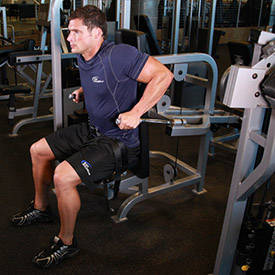
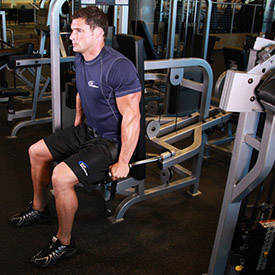
Variation:
You can perform this exercise on parallel bars or on a triceps dip assist machine.
- Triceps Pusdown-Rope Attachment
- Attach a rope attachment to a high pulley and grab with a neutral grip (palms facing each other).
- Standing upright with the torso straight and a very small inclination forward, bring the upper arms close to your body and perpendicular to the floor. The forearms should be pointing up towards the pulley as they hold the rope with the palms facing each other. This is your starting position.
- Using the triceps, bring the rope down as you bring each side of the rope to the side of your thighs. At the end of the movement the arms are fully extended and perpendicular to the floor. The upper arms should always remain stationary next to your torso and only the forearms should move. Exhale as you perform this movement.
- After holding for a second, at the contracted position, bring the rope slowly up to the starting point. Breathe in as you perform this step.
- Repeat for the recommended amount of repetitions.
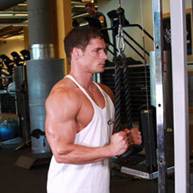
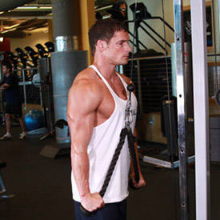
Variations:
There are many variations to this movement. For instance you can use an E-Z bar attachment as well as a V-angled bar or straight bar.
- Triceps Overhead Extension with Rope
- Attach a rope to a low pulley. After selecting an appropriate weight, grasp the rope with both hands and face away from the cable.
- Position your hands behind your head with your elbows point straight up. Your elbows should start out flexed, and you can stagger your stance and lean gently away from the machine to create greater stability. This will be your starting position.
- To perform the movement, extend through the elbow while keeping the upper arm in position, raising your hands above your head.
- Squeeze your triceps at the top of the movement, and slowly lower the weight back to the start position.
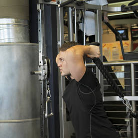
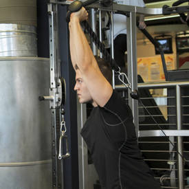
Variations:
This exercise can be executed also one arm at a time much like the one arm rows are performed.
Also, if you like the one arm variety, you can use a low pulley handle instead of a dumbbell for better peak contraction. In this case, the palms should be facing up (supinated grip) as opposed to the torso (neutral grip).
- Dumbbell Kickback
- Start with a dumbbell in each hand and your palms facing your torso. Keep your back straight with a slight bend in the knees and bend forward at the waist. Your torso should be almost parallel to the floor. Make sure to keep your head up. Your upper arms should be close to your torso and parallel to the floor. Your forearms should be pointed towards the floor as you hold the weights. There should be a 90-degree angle formed between your forearm and upper arm. This is your starting position.
- Now, while keeping your upper arms stationary, exhale and use your triceps to lift the weights until the arm is fully extended. Focus on moving the forearm.
- After a brief pause at the top contraction, inhale and slowly lower the dumbbells back down to the starting position.
- Repeat the movement for the prescribed amount of repetitions.
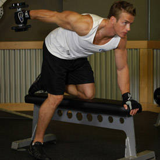
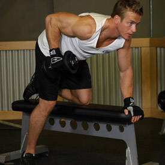
Variations:
This exercise can be executed also one arm at a time much like the one arm rows are performed.
Also, if you like the one arm variety, you can use a low pulley handle instead of a dumbbell for better peak contraction. In this case, the palms should be facing up (supinated grip) as opposed to the torso (neutral grip).